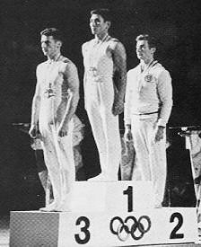

Haruhiro Yamashita (JPN)
1964 Olympic V Gold Medalist

A graduate of the Nippon Sport Science University, Yamashita was inducted into the International Gymnastics Hall of Fame in 2000. He was the inventor of the Yamashita vault.
Competition
Results
1961
AAU
Championships: 5th AA, 3rd PB, 5th FX, 5th V
USA-JPN Dual Meet: 1st Team, 7th AA
1962
GER-JPN Dual Meet: 1st Team, 2nd AA, 1st V
World Championships: 1st Team, 7th AA, 2nd V, 4th FX,
4th PB
1963
NHK Cup: 2nd AA
1964
JPN Championships: 4th AA, 2nd VT, 2nd HB, 6th R, 6th PB
Olympic Games: 1st Team, 6th AA, 1st V
This page was created on December
19, 2004 and was last updated on November 23, 2006.
© Gymn Forum